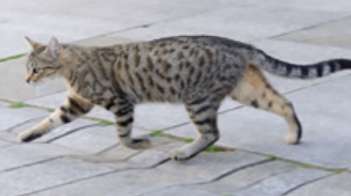

Part 1 of 2: let's check what you remember from Unit 3 — feelings, prepositions of movement, and the past simple and past continuous (Own it! 2, Student's Book page 44).
Adjectives of feeling · Prepositions of movement
1. Elsa looks and she's crying.
2. I can't believe I won! I'm really .
3. My dad is of heights. He can't go up tall buildings.
4. I forgot my friend's birthday. I was so !
5. I'm really . I didn't sleep much.

Tiger the cat went 1 the front door and walked 2 two cars 3 the road. He went 4 the park and climbed 5 a tree. Then a mouse appeared. 'Lunch!' thought Tiger. He climbed 6 the tree and followed it. The mouse ran 7 the grass and then disappeared 8 a stone. 'Maybe I'll have lunch at home today,' said Tiger.Past continuous · Past simple and past continuous
✗It wasn't snowing.
✓It was raining.
✗
✓
✗
✓
✗
✓
Photos: Own it! 2 Student's Book (Cambridge University Press), page 44.